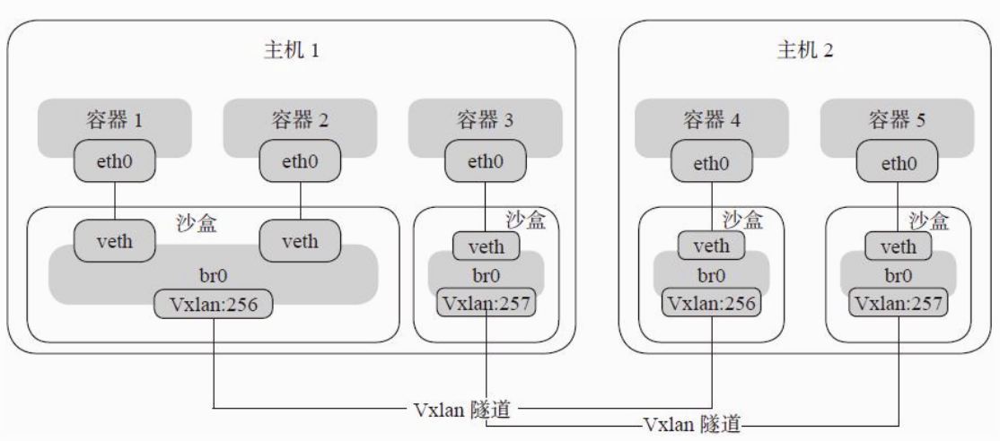

容器网络
随着Docker的普及和使用，其自身的性能无法满足大规模集群的使用，需要一个工具对成千上万个容器进行统一编排。在2015年又开始了容器编排之争，行业内最主要的三个编排框架分别是docker公司的swarm、google的kubernetes以及Apache mesos。
Mesos是参考谷歌的borg大规模集群管理系统，并于2009年推出的。swarm和kubernetes是为docker等容器技术，新推出的框架。swarm是docker公司发布的，有近水楼台先得月的优势。kubernetes是参考谷歌的borg系统10几年的容器管理经验，重新推出的一套容器管理框架，可谓含着金钥匙出身，kubernetes迅速得到了微软，红帽等支持。这场战争不用打，或许都已经猜到结局是什么，战争的胜利只是一个时间问题。
2017年10月的dockerCon峰会上，docker公司官方支持Kubernetes，确立了kubernetes成为了容器编排界事实上的标准。
容器管理与编排平台 资源调度，服务发现，扩容缩容
- Docker 主推的 Swarm + Machine + Compose
- Apache 提出的(Twitter主推)的 Mesos
- Gooogle 推的开源的 Kubernetes
虚拟机网络与容器网络异同
- VM network 拥有完善的隔离机制，虚拟网卡与硬件网卡在使用上没有啥区别，而 container network 则使用 network namespace 提供网络在Linux kernel 中的隔离
- 处于安全考虑，很多情况下，容器会部署在VM内部，这种嵌套部署需要设计心得网络模型
- Container migration 速度很快，因此 network policy 的更新需要跟得上其速度
- 容器数量多了，多主机之间的 ARP flooding 会造成大量资源浪费
Docker 在开始的很长一段时间内只支持使用 Linux bridge + iptables 进行single-host的部署，自动化方面也只有 Pipework 这类 shell 脚本
 [xxxx]")
- Sandbox: isolated netwokring running environment. Save the essential container network stack configuration, including: network interface pairs, routing table and DNS configuration. Under linux, sandbox is implemnted in form of linux network namespace. A sanbox may include several endponts from several networks.
- Endpoint: endpoint allows a sandbox to join in a network. Its implementation can be a veth pair or OVS internl port.
- Network: Its implementation can be linux bridge, VLAN, etc.
Libnetwork 实现了以下5种driver:
有两种方式来创建docker network：
- 使用docker network create命令来创建，只能创建docker内建的网络模式
- 使用docker plugin，创建自定义网络 创建自定义网络需要设置网络的driver和ipam。
Docker支持以下5中内建网络模式:
Bridge:
Docker默认的容器网络驱动。由Docker设计的一种NAT网络模型。Container通过一对veth pair连接到docker0网桥上，由Docker为容器动态分配IP及配置路由、防火墙规则等。Bridge模式下，Docker容器于Internet通信，以及不同容器之间的通信，都是通过iptables规则(如更换源或者目的地址等)控制的。 Docker bridge mode
- Host: 容器与主机共享同一Network Namespace，共享同一套网络协议栈、路由表及iptables规则等。容器与主机看到的是相同的网络视图.
- Null: 容器内网络配置为空，需要用户手动为容器配置网络接口及路由等。
- Remote: Docker网络插件的实现。Remote driver使得Libnetwork可以通过HTTP RESTful API对接第三方的网络方案，类似SocketPlane的SDN方案只要实现了约定的HTTP URL处理函数及底层的网络接口配置方法，就可以替换Docker原生的网络实现(宋祁朋: 疑似在Docker官方文档中已经找不到这种模式了)。
Overlay mode
Docker原生的跨主机多子网网络方案。主要通过使用Linux bridge和vxlan隧道实现，底层通过类似于etcd或consul的KV存储系统实现多机的信息同步(宋祁朋：需要确认下)。The overlay network driver creates a distributed network among multiple Docker daemon hosts. This network sits on top of (overlays) the host-specific networks, allowing containers connected to it (including swarm service containers) to communicate securely. Docker transparently handles routing of each packet to and from the correct Docker daemon host and the correct destination container.
overlay网络模型比较复杂，底层需要类似consul或etcd的KV存储系统进行消息同步，核心是通过Linux网桥与vxlan隧道实现跨主机划分子网。每创建一个网络，Docker daemon 会在主机上创建一个单独的沙盒(i.e. network namespace). 在沙盒中，Docker(实际上是Docker daemon, 下同) 会创建名为br0的网桥，并在网桥上增加一个vxlan接口，每个网络占用一个vxlan ID，当前Docker创建vxlan隧道的ID范围为256~1000，因而最多可以创建745个网络。当添加一个容器到某一个网络上时，Docker会创建一对veth网卡设备，一端连接到此网络相关沙盒内的br0网桥上，另一端放入容器的沙盒内，并设置br0的IP地址作为容器内路由默认的网关地址，从而实现容器加入网络的目的。 Docker overlay mode
总而言之，Docker的整个网络模型，是建立在Network Namespace、Linux网桥、vxlan隧道、iptables规则之上的，也正是由于过于依赖网桥与iptables，导致Docker的网络效率不高，招致了用户和开发者的诟病.
Appendix
Linux network namespace
Linux 内核提供的一种网络资源虚拟隔离技术。不同network namespace具有各自的网络设备，协议栈，路由表以及防火墙规则等。同一network namespace下的进程则共享同一网络试图。Docker提供的5种网络模式均通过 network namespace实现。
Etcd
Etcd是CoreOS公司开发的开源的K-V存储及服务发现程序，有着大量的拥趸。在集群中，可用于在不同主机间交换配置、状态等信息，其功能强大，相应的配置也略微复杂一些。
Consul
Consul is a fantastic solution for providing, among other things, powerful and reliable service-discovery capability to your network.
Kubernets
Kubernets 和 Docker 之间的关系
Kubernetes与Docker有什么关系？ 众所周知，Docker提供容器的生命周期管理，Docker镜像构建运行时容器。但是，由于这些单独的容器必须通信，因此使用Kubernetes。因此，我们说Docker构建容器，这些容器通过Kubernetes相互通信。因此，可以使用Kubernetes手动关联和编排在多个主机上运行的容器。
helm 是 Kubernets 生态中的一个包管理工具。helm chart 是将某个应用所需的所有配置等打包到一起，发布到 helm 的 repo 中，tiller 是 helm 的服务端组件，部署在k8s集群中。在部署应用时就可以使用类似于 apt-get install 的命令helm install 来安装。helm 相关组件的关系如下: